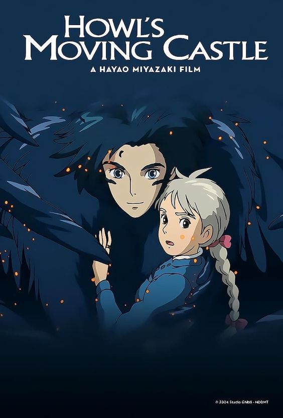
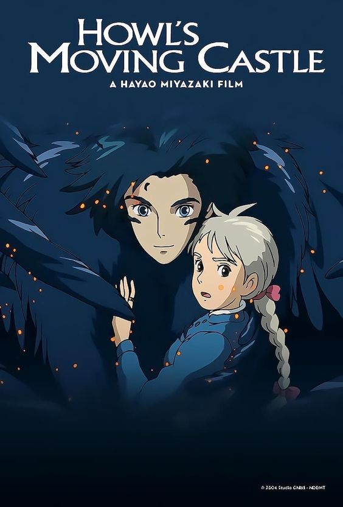

Welcome to the magical world of Studio Ghibli
Dive into various experiences given by magic of these movies.
- Spirited Away (2001) - A young girl named Chihiro finds herself trapped in a magical world and must work in a bathhouse to save her parents.
- My Neighbor Totoro (1988) - Two sisters move to the countryside and encounter a forest spirit named Totoro.
- Princess Mononoke (1997) - A young warrior named Ashitaka becomes embroiled in a conflict between humans and the gods of the forest.
- Howl’s Moving Castle (2004) - A young woman named Sophie is cursed by a witch and seeks the help of a wizard named Howl.
- Kiki’s Delivery Service (1989) - A young witch named Kiki moves to a new town and starts a delivery service.


 



Studio Ghibli is a renowned animation studio based in Japan, known for creating some of the most captivating and imaginative animated films in the world...
In conclusion, Studio Ghibli is a treasure in the world of animation, known for its breathtaking visuals, heartfelt storytelling, and the enduring impact of its films...